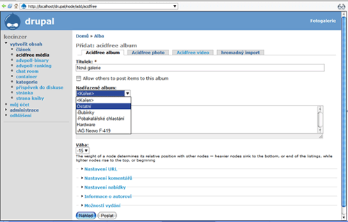

Acidfree galerie
Pro vedení fotogalerií existuje do Drupalu několik modulů. Sám jsem je vyzkoušel všechny nejznámější.
Image
umožňuje vytvářet nody jako obrázky a vézt celá alba s náhledy.
Zakládá si na taxonomii a neumožňuje hromadný import. K tomu je potřeba
další modul (image_import), který je však dosti neohrabaný a ve verzi
4.7 nepoužitelný. Celkově se tedy hodí jen na menší galerie, kde není
kladen důraz na pokročilejší funkce.
Oproti tomu modul gallery
zajišťuje propojení Drupalu s velice propracovaným systémem správy fotek
Gallery2. Zde jsou naopak možnosti
dosti rozsáhlé. Poskytuje správcům vše, co si mohou přát i ty
nejnáročnější z nich. Nevýhoda je zde v tom, že se jedná
o samostatné řešení, navíc dosti komplikované. Navíc nejsou jednotlivé
fotky součástí Drupalu, což vede k určitým omezením.
Acidfree v podstatě skloubil vlastnosti těchto modulů. Vznikla tak
perfektní fotogalerie, která je založená na nodech, čili perfektně
provázaná s Drupalem, s možností pokročilejší správy jednotlivých
alb, i hromadným importem.
Předem je nutno sdělit, že pro funkčnost je potřeba mít nainstalován
modul filemanager,
který se stará o jednotlivé fotky.
Galerie může mít neomezený počet alb a to i libovolně do sebe
vnořených. Nezakládá si však na taxonomii ale na sebe napojených uzlů.
U každého alba je možné nastavit náhled (i když se dá zvolit pouze
náhodný obrázek) a řazení prvků (podle celkového nastavení,
chronologicky, abecedně, či nejaktuálnější na začátek). Tím však
možnosti nekončí. Pod obsahem alba totiž naleznete hromadné úpravy
jednotlivých prvků. Můžete tak jednoduše smazat libovolná alba či fotky,
přesunout je do jiného, upravit jejich popisky, změnit přiřazení,
kopírovat atd. Vkládání fotek lze provést buď jednotlivě, nebo hromadným
importem. Zde musím zmínit chybu způsobenou Java Skriptem ve spojení
s modulem upload. Pokud ho máte totiž aktivovaný, nezobrazí se vám při
mass importu jednotlivé volby. Je nutné ho tedy nemít povolený, nebo ho
zakázat pro acidfree typ nodu. Hromadně můžete vložit buď více obrázku
do formuláře, nebo daleko lépe zadat adresář, ze kterého se provede
nahrání fotek. Tato možnost je pro mě velice užitečná.
Musí zde uvést ještě jednu chybu, kterou jsem objevil a to ve spojení
s modulem pathauto. Pokud mám totiž nastavené automatické přejmenování
jednotlivých fotek, při hromadném importu vyskakuje chyba a fotky se
nepřejmenují (~~urldecode() expects parameter 1 to be string,…~~).
V celkovém nastavení je možné zvolit, zda mají mít uživatelé vlastní
alba, rozlišení obrázku v plné velikosti, rozlišení velkého obrázku a
náhledu, řazení, počet sloupců a řádků na stránce s náhledy, zda se
mají načítat informace z EXIF atd. K dispozici jsou i funkce na rotaci
obrázků.
Jednotlivá alba jsou označená obrázkem složky, na kterém je vidět
vždy náhodný náhled. Jednotlivé fotky jsou pak zobrazeny dle nastavení co
do počtu řádků a sloupců. Zde bych možná změnil napevno zadán počet
sloupců a řádků jen na počet náhledů. Zobrazení je pak vázáno na
určité rozlišení a při jeho změně např. na menší dochází
k degeneraci.
Jako pozitivum vidím zobrazení lišty s dalšími fotkami nad právě
zobrazovanou. Lze tak jednoduše skočit třeba na 8. fotku, přičemž se
nacházím na 2. Zde bych ještě možná přidal zobrazování určitého
počtu náhledů ostatních fotek.
Acidfree modul představuje určitě perfektní řešení pro vedení obrázků. Obsahuje i další drobné vlastnosti a nastavení, které jsem zde neuvedl. Např. jsem se vůbec nezmínil, že umožňuje spravovat i video soubory. Rád bych se ještě zmínil o několika postřehách, které mám k aktuální verzi. Není mi jasné, proč když aktivuji modul book, nody galerie se chovají jako stránky knihy, ukazuje se tedy u nich možnost vytisknout stránku atd. Přijde mi to jako mínus. Další dvě chyby jsem již zmiňoval. Jediné co mi chybí k dokonalosti je chyba v kombinaci s pathauto a hromadným importem, nicméně si myslím, že bude brzy opravena.
Pár screenshotů Osobně mohu tento modul tedy doporučit všem, co hledají výbornou galerii do Drupalu. Případné dotazy rád zodpovím.

{kind=link}
{kind=link}
{kind=link}
vkládání obrázku do článku
Momentálně řeším problém s vkládáním obrázků do článku, konkrétně jak to udělat, aby to bylo pokud možno elegantní. Zatím to řeším způsobem, že do složky obrázky nahraju soubor a pak ho vytáhnu přes klasické <img>, jenže šlo by nějak udělat, abych soubor nahrál do galerie, která by nebyla normálně dostupná (pro návštěvníka – bez práv) a já bych pak třeba nej zadal <!--obrazek–10> A místo toho by se nahradil obrázek z fotogalerie? Samozřejmě styly bych si vedl zvlášť v souboru přidaného do šablony. Dík.
Je možné to provádět
Je možné to provádět i pomocí modulu img_assist. Nejdříve se vlastně obrázek pošle do galerie a následně z img_assist se dá vložit do článku. Samozřejmě in-line je také velice elegantní řešení.
Já ovšem stále hledám řešení, jak vkládat elegantně obrázky bez nutnosti je právě předem vložit do nějaký galerie (nodu). Upload modul sice funguje dobře, ale pokud vytvářím článek, tak dokud ho neodešlu, přiložené soubory se nezobrazují.
XDěčín.net, kecinzer.net
Modul inline robi nieco
Modul inline robi nieco podobne ale obrazok je sucastou node. Do stranky sa da vlozit cez
[inline:poradovecisloprilohy].slideshow
ahojte nefunguje mi slideshow na 4dultrazvuk.sk mate nejaky tip kde by mohol by problem? dik
slideshow 2.
da sa slideshow vyradit? aby sa vobec nezobrazoval odkaz na slidewhow…
dik
Jistě, stačí vypnout
Jistě, stačí vypnout modul acidfree_slideshow nebo tak nějak :).
XDěčín.net, kecinzer.net
acidfree vs gallery2 & acidfree a massimport
No nazdar :)
Acidfree je fajn, konieckoncov mame na nom na somvprahe.sk postavenu celu fotogaleriu ale predsa len, po tom co si na druhom serveri skusobne testujem gallery2 tak sa to imho neda moc porovnavat.
Odhliadnuc od vsetkych vychytavok a blbosticiek co gallery2 ma (efekty, import z picasy a ine), mi na acidfree vadi najviac toto: mass import.
Ty v clanku pises ze to je ok, tak neviem ako to myslis, mam filemanager aj acidfree najnovsie verzie. a massimport tam podla mna nie je. Moznost naraz nahrat 5 obrazkov nie je ziadny mass import, a nahrat obrazky zo servera tiez nie je buhvico.
Kedy konecne bude Acidfree podporovat mass import z lokalneho pocitaca? Chcem proste iba moznost vybrat si adresar na disku, a nech z neho Acidfree naimporti do galerie vsetky fotky. to je podla mna POUZITELNY mass import pre uzivatelov, a toto tam IMHO nie je.
Za mass import považuji
Za mass import považuji právě ono nahrání fotek do adresáře na FTP a následně jen zadaní jeho adresy a provedení importu. Nic jiného nepotřebuji, nechci aby na web mohl uploadovat fotky kdokoliv, to by vypadalo. I na komunitním webu provádím přidávání fotek sám. Takže musíš brát v potaz to co je pro mě dobré. Nesnažím se tvrdit, že je to nejlepší řešení.
XDěčín.net, kecinzer.net
jo…ael co když mám fotky
jo…ael co když mám fotky na ftp v adresáři, zadám mass import a importuje se mi jen necela polovian adresare????
PHP ma casovy limit na
PHP ma casovy limit na vykonavanie dlhsie beziacich skriptov – obycajne 30 sec. a za ten cas nestihne spracovat vsetky fotky. Riesenie je bud predlzit limit (nastavenim php.ini vlastnosti – co moze urobit napr. webhoster) alebo importovat fotky po mensich davkach.
a este nieco
uz som z viac stran cital ako je super ze acidfree pracuje s obrazkami ako s nodmi a ako gallery2 nie je integrovany do drupalu…
skus mi napisat konkretnu jednu vec kde by ti vadilo ze obrazky z galerie nie su nody. imho to je nejaky chaby argument uzivatelov acidfree proti gallery2… aspon ja som neprisiel na ziadnu vec, kde by mi vadilo ze gallery nema obrazky ako node. Aj ked ich nema ako node, aj tak ponuka vsetko to co ponuka Acidfree a este ovela viac. tiez si mozes vlozit nahlady na fotky z galerie do clankov, atd.
proste keby som mal na somvprahe.sk moznost vypnut safe mode, tak davno tam mam gallery2. To odporucam vsetkym uzivatelom ktory chcu mat peknu galeriu na stranke.
Teda,keby som teraz zacal menit acidfree na gallery, este by som musel zistit ako do gallery naimportit aktualne fotky a albumy ktore su vlozene v acidfree. Mate s tym niekto skusenosti?
Acidfree je fajn, ale gallery je bomba :D
Predpokladam, ze to byl
Predpokladam, ze to byl i challenge k tomu, ze o gallery2 ve spolupraci s Drupalem napisete clanek :-)
Pokud se mu nebude chtít,
Pokud se mu nebude chtít, já bych o ní klidně něco napsal, protože jsem se s instalací docela pral a rád bych moje zkušenosti předal dál.
XDěčín.net, kecinzer.net
Souhlasím s tím, že
Souhlasím s tím, že gallery2 je bomba. Těch možností co nabízí je opravdu mnoho. Ale ne všichni uživatelé to prostě využijí. Navíc je tento systém dost náročný na server řekl bych, jen se stačí podívat na jeho strukturu databáze a samotný kod, jsou ho doslova megabyty. Integrace do Drupalu mi nepřijde úplně ideální. Funguje bez problémů to nepopírám, ovšem není to prostě ono. Sám momentálně tutu galerii na svém webu používám, ale chystám se přejít na acidfree. Mít jednotlivé obrázky jako jednotlivé nody má jednak výhodu v tom, že se dají fotky jednoduše komentovat (v gallery2 jsou samostatné komentáře) a hlavně jde o tu provázanost. Nemusím mít dvakrát uživatele v databázi atd.
Sečteno podtrženo, pro toho kdo funkce gallery2 nevyužije, je pro něj tato galerie zbytečná (ve spojení s Drupalem).
XDěčín.net, kecinzer.net
kategorie
kecinzer: používám gallery2 už asi pět let, jsem na ni zvyklý, ale ze stejného důvodu ji neumím s ničím porovnat – v její integraci do Drupalu mi jen vadí, že na ni nemůžu aplikovat kategorie (modul category) – nevíš prosímtě, jestli se alba nebo obrázky dají v acidfree kategorizovat? Zmiňuješ se o tom, ale neporozuměl jsem tomu úplně. Když jsou to nody, tak ny to snad mělo jít.
Jistě že se dají
Jistě že se dají kategorizovat. Popisuji to i v článku. Může se vytvářet neomezené množství podkategorií. Tyto kategorie ovšem nejsou tvořeny pomcí termínů v taxonomy, ale jako nody, čili podobné modulu category.
XDěčín.net, kecinzer.net
Image_import
Já nevím, ale já jsem s modulem image_import spokojená a nic těžkopádného mi na tom nepřipadá… Snad akorát to, že je třeba prvně přes FTP nahrát soubory do import-adresáře, a případně si pak ty fotky přejmenovat… Ale to se dá ošetřit přes txt soubor.
Mně verze pro Drupal
Mně verze pro Drupal 4.7 pořádně nefungovala. Když jsem přecházel, tak neexistovala použitelná. Navíc se mi stávalo, že mi mizely náhledy z galerie a místo nich se mi zobrazovaly velké fotky.
XDěčín.net, kecinzer.net
jak na nejnovější obrázky?
existuje nějaká možnost jak zobrazit nejnvější obrázky z acidfree galerií na hlavní stránce v bloku? něco jako poslední obrázky z klasických image galleries?
Wii, PS3, Xbox 360, PC hry | Hybrid
acidfree na to ma samostatne bloky
ak mas acidfree tak chod do administer/block a pribudli ti tam 3 bloky, najnovsie obrazky, nahodne obrazky a este jeden. u kazdeho si mozes nastavit kolko nahladov fotiek sa ma v bloku zobrazovat.
aha, uz sem to nasel,
aha, uz sem to nasel, diky!
Wii, PS3, Xbox 360, PC hry | Hybrid
Vkládání obráků do článku
Chtěl sem se zeptat. Má někdo ověřený způsob, jak vkládat obrázky do článku tak aby obrázky tvořily „samostatnou“ galerii z které by se dalo vrátit zpět na článek z jakéhokoliv obrázku? Ja jsem zatím použil knihu. Skryl sem na konci knihy odkazy na jednotlivé strany. Takže mě zbyl jen odkaz na další stranu a na první. Při začlenění obrázku jako stran je to dobrá věc. Ale později jsem potřeboval udělat další knihu kde by byli odkazy na další strany. Takže teď řeším problém jak co upravit. Diky
zobrazení importu
Dobrý den. Na menu používám taxonomy menu a jako galerii Acidfree. Asi to bude zcela triviální dotaz, ale… Pokud vkládám obrázky do nějaké galerie pomocí mass import, obrázky se sice vloží bezchybně, ale stejně tak se zobrazí i mimo galerii jako aktuality (což dosti znepřehledňuje) stejně jako je tomu i u stránek.. Jediným řešením,které sem zatím udělal je,že sem v možnostech vydání galerie dal přilepit galerii na začátek stránky.
Př.: Menu: Domů
Tvorba
Galerie → Makro
Škola Letadlo
Vše
Chtěl bych, aby se galerie nebo fotky například z Makro zobrazovaly pouze v této položce (v případě galerie jen jako složka galerie) a nebyly vyvěšeny v Galerie a Makro jako aktuality. Snad sem to nenapsal moc složitě ;-)
No, ja podobny problem
No, ja podobny problem resil i s prvni strankou. Tam jsem to udelal tak, ze jsem ve vychozich parametrech pro typ souboru Image odfajfkoval zobrazovani na prvni strance, takze pokud to u daneho obrazku nepovolim pri vkladani, zobrazuji se mi jednotive az v te galerii… Ale souhlasim, ze tahle vlastnost mne u Drupalu+AcidFree docela stve.
zelenáč
Chtěla jsem se zeptat, co vše potřebuji, aby mi fungovalo vkládání fotek přes Acidfree. Netuším jsem začátečnák… Díky moc.
Nezobrazí se v administraci...
…mám (snad) Drupal v 5.1, ale v Administraci se mi nezobrazí možnost nainstalovat tento modul… prostě tam není… (snad jsem si stáhnul, co jsem měl… dali byste link,pls?)
heh
Tady se píše že musim
Tady se píše že musim mít pro správnou funkčnost nainstalovaný filemanager. Ale kde ho mám vzít když pro verzi drupalu 5 jsem ho nikde nenašel? Pak mám ještě jeden problem hlavní menu nastavení acidu mám na z 10procent česky a zbytek anglicky!
Článěk je psaný pro
Článěk je psaný pro verzi 4.7. Verze 5 je samo trochu jiná. Na překladu pracuji.
XDěčín.net, kecinzer.net
Category module vs acidfree
zdravim …mam taku otazocku na keczinzera, alebo vlastne aj na ostatnych, mozno by mi vedeli poradit …
mam nainstalovany modul Category a vsetko co s nim suvisi a takisto aj Acidfree gallery ..... uz som si vytvoril nejaku tu kategoriu obsahu, ale ked chcem vytvorit album cez AcidFree, tak mi to vypise taku haluz ze: „Zistená neplatná voľba. Kontaktujte administrátora webu.“
takato vec sa mi este nestala pri predoslych strankach kde som kategorie nepouzival … a takisto ako do sucasnej stranky aj do tych predoslych som AcidFree modul aj so vsetkym potrebnym instaloval rovnako …
takze teraz neviem ci ja nemam nieco zle nastavene, alebo ci si Category module nerozumie s acidFree …
vedel by niekto co by s tym mohlo byt? …
zatial to skusam na takej haluz stranke kde nema byt ziadny konkretny obsah …je to kvazi len testovacia stranka http://cms.nic.sk …kuknite si to a ak by mi niekto chcel poradit, tak potom cez moj mail zajicew@azet.sk by som mu mohol poslat pristupove udaje …
diki moc
Modul Category je bohužel
Modul Category je bohužel v pětce rozhašený, zlobí s Acidfree, Simple news a i s Fórem – donutilo mě to vrátit se ke klasické Taxonomy, ačkoli jsem byl od Category značně rozmazlenej…
Sleduju to trochu, dlouho žádná náprava, teprve v těchto dnech to vypadá na průlom, Jiří Bernášek poslal na drupal.org několik oprav, které zdá se zabírají, řádí tam jak ďas! :O) – ale Acidfree mezi nimi není.
Jaké problémy dělá category?
Jaké problémy dělal ten modul category? Chceme se do něj teď v jednom projektu pustit, bude tam i fórum a další jiné věci. Už kdysi jsem někde četl a slyšel, že ten modul dělá problémy. Ale co konkrétně? Mám za to, že všechno jde vyřešit, ale pokud by to řešení mělo stát „větší než přijatelné množství“… úsilí, tak by stálo zato 2× měřit a potom řezat.
Práva
Dobrý den,
chtěl bych se zeptat jestli tento modul umožňuje udělování práv uživatelům abych mohl omezit které fotky kdo uvidí.
Díky
Honzin
Nebo jestli by jste měl
Nebo jestli by jste měl někdo nějakou jinou galerii ve které by to šlo udělat? :-) Popř. kdyby to bylo česky tak bych se nezlobil ;-)
Protože v Acidfree jsou
Protože v Acidfree jsou obrázky i alba nody, lze je kategorizovat, a pak pomocí taxonomy access povolovat přístup různým rolím. Bude asi přehlednější, když se budou kategorizovat jen alba, ale možné jsou samozřejmě i jednotlivé obrázky, záleží, co chceš.
Gallery2 má teď líp propojené uživatele i role, ale protože její alba nejsou nody, nedají se kategorizovat a přístup se musí nastavit v gallery. Má trochu jiné rozhraní, ale v podstatě to jde, jak pro alba, tak pro jednotlivé obrázky, náhledy, komentáře či hodnocení.
Vkládání obrázků
Dobrý den, jsem v Drupalu věčný začátečník, ale mám taky věčný problém. Když vkládám do článku obrázky, tak mě moc mrzí, že nejde ošetřit, aby je NEobtékal text… Například napíšu odstavec, pod ten chci dát 4 thumbnaily pro ilustraci obsahu k tomu odstavci a když píšu další odstavec, tak jeho text obtéká poslední vložený thumbnail.. Alighn mám left… Když dám Center, tak to ty obrázky narovná pod sebe a mezera mezi textem je zase moc veliká… Zkoušel jsem zadávat path thumnailu rovnou z galerie, ale moc mi to nefungovalo… tagy pro zalomení textu to vůbec neregistruje… Obvykle to řeším tak, že dám fotky až na konec článku, ale to nevypadá moc atraktivně… Mám modul gallery + image assist atd… Kde může být problém? V prackách? :-)
taky mě nebaví vkládat obrázky jeden po druhým… Co hromadný plnění galerie?
Nahrál jsem si gallery2 a
Nahrál jsem si gallery2 a potřeboval bych, abych u uživatelů odstranil na albech změnit oprávnění.. aby to mohl vidět pouze admin.. jelikož se mi nedaří přesně nastavit práva, aby uživatel mohl mazat a upravovat svoje alba a fotografie a ne i cizí. Něco jak je třeba na libimseti… každý uživatel má svoje album, do kterého může vkládat fotografie…neporadí někdo, jak to nejlépe provést?
Poslat nový komentář